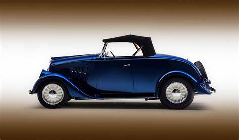

Out of the different types of cars, a sedan (US) or a saloon (UK) is traditionally defined as a car with four doors and a typical boot/ trunk. A slightly technical detail is that it usually features a 3-box configuration with each of the boxes categorically used for the engine, passenger, and cargo.
Examples of sedans: Maruti Suzuki Ciaz, Hyundai Elantra, etc.
Roadsters are the type of cars that are popularly used for elevating one’s appearance rather than comfort. These are open-cars with a two-seater arrangement that has minimal weather protection. Also considered a simpler version of a convertible, this car doesn’t have any glass on the top or side areas of the vehicle. These are becoming quite popular in many countries nowadays.
